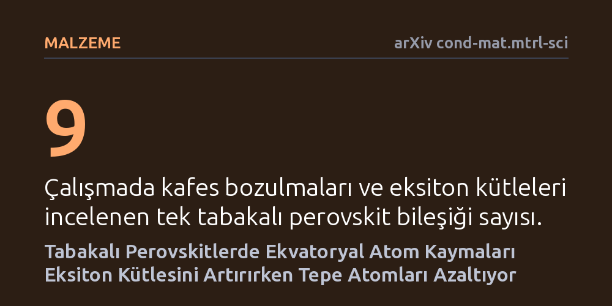

MALZEME · arXiv cond-mat.mtrl-sci · 2026-09-08
Araştırmacılar, tabakalı perovskit malzemelerde kristal kafes bozulmalarının eksiton kütlesini nasıl değiştirdiğini yoğunluk fonksiyoneli teorisi simülasyonlarıyla inceledi. Ekvatoryal halojen atomlarının bağa dik kaymalarının kütleyi artırdığı, tepe atomlarının kaymalarının ise kütleyi azalttığı tespit edildi.
Kristal kafesteki atomik kaymaların yük taşıyıcı özelliklerini rastgele değil konuma göre zıt yönlerde değiştirdiğini göstermesi, yeni nesil güneş pili ve LED malzemelerinin hassas tasarımına olanak tanır.

Güneş pillerinden yeni nesil ekran teknolojilerine kadar geniş bir alanda incelenen hibrit organik-inorganik perovskitler, ışığı elektriğe ya da tersine çevirme kabiliyetleriyle öne çıkıyor. Özellikle tek tabakalı iki boyutlu perovskitlerde ışık soğurulduğunda elektronlar ve geride bıraktıkları boşluklar eksiton adı verilen çiftler meydana getiriyor. Bu eksitonların malzemedeki hareketi ve optik özellikleri ise indirgenmiş eksiton kütlesi adı verilen fiziksel parametreye bağlı olarak şekilleniyor.
Daha önce yapılan deneysel araştırmalar, dokuz farklı tek tabakalı perovskit bileşiğinde kafes bozulmaları ile eksiton kütlesi arasında çok güçlü bir paralellik olduğunu göstermişti. Oktahedral kurşun-iyot kafesindeki eğilme arttıkça eksiton kütlesinin de arttığı kaydedilmişti. Ancak malzeme biliminde birlikte değişen iki durum her zaman birbirinin nedeni olmak zorunda değildir. Gerçekten kafesteki eğilme mi bu kütleyi artırıyordu, yoksa başka gizli bir atomik hareket her iki durumu birden mi etkiliyordu sorusu cevapsız kalmıştı.
Araştırmacılar karmaşık kafes deformasyonlarının altında yatan mekanizmayı çözmek için grup temsil teorisini kullandı. İncelenen dokuz kristal yapının tamamındaki biçim bozuklukları, ideal yüksek simetrili bir ana kafesin altı temel simetri moduna ayrıştırıldı. Bu analiz, farklı perovskitlerin aslında aynı altı atomik yer değiştirme modunun doğrusal bileşimleriyle bozulduğunu ortaya koydu.
Gerçek deneylerde aynı anda meydana gelen bu modların tekil etkilerini ayırmak imkansız olduğu için yoğunluk fonksiyoneli teorisine (DFT) başvuruldu. Bilgisayar simülasyonlarında her bir simetri modunun genliği diğerlerinden tamamen bağımsız şekilde değiştirildi ve elektronik bant yapıları hesaplandı. Böylece her bir atomik kaymanın eksiton kütlesi üzerindeki doğrudan ve nedensel etkisi tek tek haritalandırıldı.
Hesaplamalar, atomların hangi yöne ve kafesin neresinde kaydığının hayati bir fark yarattığını gösterdi. Kristal düzlemi boyunca uzanan ekvatoryal halojen atomlarının bağ eksenine dik enine kaymaları eksiton kütlesini belirgin biçimde artırdı. Buna karşılık, tabakanın üst ve alt yüzeylerine bakan tepe halojen atomlarının bağa dik kaymaları tam tersi bir etki göstererek eksiton kütlesini düşürdü.
Çalışmanın bir diğer kritik sonucu ise atomların bağ doğrultusunda uzayıp kısalmasıyla ilgili oldu; bağ ekseni boyunca gerçekleşen yer değiştirmelerin eksiton kütlesi üzerinde kayda değer hiçbir etkisi gözlenmedi. Böylece daha önce tek parça bir eğilme olarak görülen etkinin, aslında farklı konumlardaki zıt ve nötr mekanizmaların bir toplamı olduğu kanıtlandı.
Elde edilen üç yeni yapı-özellik ilişkisi, tabakalı perovskitlerde eksiton özelliklerinin körlemesine denemeler yerine hedefe yönelik atomik tasarımla ayarlanabileceğini gösteriyor. Kristal kafesin arasına yerleştirilecek organik moleküller doğru seçilerek tepe veya ekvatoryal bağlar istenen yönde esnetilebilir ve malzemenin ışık soğurma özellikleri ayarlanabilir.
Bu bulgular, iki boyutlu perovskit temelli ışık yayan diyotlar ve dedektörler geliştiren araştırmacılar için net bir tasarım kuralı sunuyor. Yine de bu teorik öngörülerin laboratuvar koşullarında hassas kimyasal sentezlerle sınanması ve bağımsız deneysel ölçümlerle tekrarlanması gerekiyor.